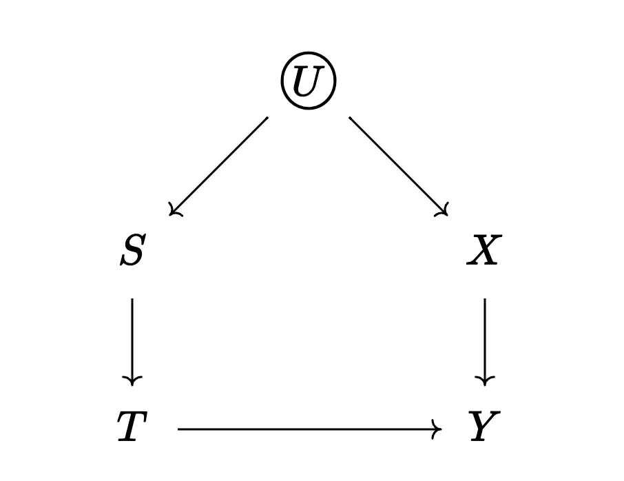

── Attaching core tidyverse packages ──────────────────────── tidyverse 2.0.0 ──
✔ dplyr 1.1.4 ✔ readr 2.1.5
✔ forcats 1.0.0 ✔ stringr 1.5.1
✔ ggplot2 3.4.4 ✔ tibble 3.2.1
✔ lubridate 1.9.3 ✔ tidyr 1.3.1
✔ purrr 1.0.2
── Conflicts ────────────────────────────────────────── tidyverse_conflicts() ──
✖ dplyr::filter() masks stats::filter()
✖ dplyr::lag() masks stats::lag()
ℹ Use the conflicted package (<http://conflicted.r-lib.org/>) to force all conflicts to become errors
Exercise
House of DAG Simulation.
I’ve included a little script with a couple of functions meant to illustrate the connection between DAGs and the estimands we saw in class (ATE, ATT, ATC).
Save it to your project and load it using the source() function.
You should see a function called hod_simulation() which creates a dataset that corresponds to the following DAG:

\(Y\): outcome
\(T\): treatment
\(U\): unobserved confounder
\(S\): affects selection into \(T\)
\(X\): affects \(Y\) directly
The hod_simulation() function has the following arguments:
N: Sample Size
rho: The correlation between \(S\) and \(X\), it accepts values between -1 and 1.
Bt: this is the treatment effect.
Bx: this is the direct effect of \(X\) on \(Y\)
Note. There’s bunch of stuff going on under the hood, but we won’t worry about that this week.
This is the dataset it creates:
Code
source("hod_simulation_functions.R")
Standard Error ~ 0.322
Power ~ 0.873
Joining with `by = join_by(variable)`
# A tibble: 4 × 3
variable sd mean
<chr> <dbl> <dbl>
1 y 5.17 1.63
2 t 0.500 0.484
3 x 1.00 0.971
4 s 1.01 0.964
Code
set.seed(12345) ## include this so that grading is easier for me.d <-hod_simulation(N =1e3, Bt =2, Bx =4, rho =0.8)
Standard Error ~ 0.405
Power ~ 0.999
Joining with `by = join_by(variable)`
# A tibble: 4 × 3
variable sd mean
<chr> <dbl> <dbl>
1 y 6.75 4.98
2 t 0.500 0.52
3 x 1.02 1.00
4 s 1.01 1.02
Note. Ignore the “Standard Error” and “Power” messages.
Without looking at the results just yet… do you think the naive estimate will be larger or smaller than the “real” estimate ( \(ATE = 2\) )?
Check your answer. What are the results given by the naive estimator?
Code
d |>group_by(t) |>summarize(y =mean(y))
# A tibble: 2 × 2
t y
<int> <dbl>
1 0 2.00
2 1 7.72
Code
lm(y ~ t, data = d)
Call:
lm(formula = y ~ t, data = d)
Coefficients:
(Intercept) t
2.002 5.718
Re-do this but set rho to -0.8 (so that \(S\) and \(X\) are now negatively correlated).
Code
d <-hod_simulation(N =1e5, Bt =2, Bx =4, rho =-0.8)
Standard Error ~ 0.04
Power ~ 1
Joining with `by = join_by(variable)`
# A tibble: 4 × 3
variable sd mean
<chr> <dbl> <dbl>
1 y 6.21 5.01
2 t 0.500 0.498
3 x 1.00 1.01
4 s 1.00 0.997
Code
d |>group_by(t) |>summarize(y =mean(y))
# A tibble: 2 × 2
t y
<int> <dbl>
1 0 5.82
2 1 4.19
Code
lm(y ~ t, data = d)
Call:
lm(formula = y ~ t, data = d)
Coefficients:
(Intercept) t
5.818 -1.628
Exercise
Take the dataset d created in the previous question and modify it so that the treatment is now randomized (this will destroy the path between \(S\) and \(T\)).
Code
d$t <-sample(d$t)d <- d |>mutate(y =ifelse(test =as.logical(t), yes = y1, no = y0 ))
Code
lm(y ~ t, data = d)
Call:
lm(formula = y ~ t, data = d)
Coefficients:
(Intercept) t
4.032 1.958
Tip
Hint: You can achieve this using the sample() function on d$t.
You will also want to create a new d$y using the ifelse() function (or something similar to that).
Without looking at the results just yet… do you think the naive estimate will be larger or smaller than the “real” estimate ( \(ATE = 2\) )?
Check your answer. What are the results given by the naive estimator?
Use lm() to predict the newly created y from t. What are the coefficient values?
Use lm() to predict the newly created y from t and x. What are the coefficient values?
Source Code
---title: "Solutions 3"editor_options: chunk_output_type: console---```{r}library(tidyverse)```## Exercise*House of DAG Simulation.*I've included a [little script](https://github.com/acastroaraujo/socStats2/blob/main/hod_simulation_functions.R) with a couple of functions meant to illustrate the connection between DAGs and the estimands we saw in class (ATE, ATT, ATC).Save it to your project and load it using the `source()` function.You should see a function called `hod_simulation()` which creates a dataset that corresponds to the following DAG:::: grid::: g-col-7{width="100%"}:::::: g-col-5- $Y$: outcome- $T$: treatment- $U$: unobserved confounder- $S$: affects selection into $T$- $X$: affects $Y$ directly::::::The `hod_simulation()` function has the following arguments:- `N`: Sample Size- `rho`: The correlation between $S$ and $X$, it accepts values between -1 and 1.- `Bt`: this is the treatment effect.- `Bx`: this is the direct effect of $X$ on $Y$*Note. There's bunch of stuff going on under the hood, but we won't worry about that this week.*This is the dataset it creates:```{r}source("hod_simulation_functions.R")set.seed(12345) ## include this so that grading is easier for me.d <-hod_simulation(N =1e3, Bt =2, Bx =4, rho =0.8)```*Note. Ignore the "Standard Error" and "Power" messages.*```{r}d```- Without looking at the results just yet... do you think the naive estimate will be larger or smaller than the "real" estimate ( $ATE = 2$ )?- Check your answer. What are the results given by the naive estimator?```{r}d |>group_by(t) |>summarize(y =mean(y))lm(y ~ t, data = d)```- Re-do this but set `rho` to -0.8 (so that $S$ and $X$ are now negatively correlated).```{r}d <-hod_simulation(N =1e5, Bt =2, Bx =4, rho =-0.8)d |>group_by(t) |>summarize(y =mean(y))lm(y ~ t, data = d)```## ExerciseTake the dataset `d` created in the previous question and modify it so that the treatment is now randomized (this will destroy the path between $S$ and $T$).```{r}d$t <-sample(d$t)d <- d |>mutate(y =ifelse(test =as.logical(t), yes = y1, no = y0 ))``````{r}lm(y ~ t, data = d)```::: callout-tipHint: You can achieve this using the `sample()` function on `d$t`.You will also want to create a new `d$y` using the `ifelse()` function (or something similar to that).:::- Without looking at the results just yet... do you think the naive estimate will be larger or smaller than the "real" estimate ( $ATE = 2$ )?- Check your answer. What are the results given by the naive estimator?- Use `lm()` to predict the newly created `y` from `t`. What are the coefficient values?- Use `lm()` to predict the newly created `y` from `t` and `x`. What are the coefficient values?